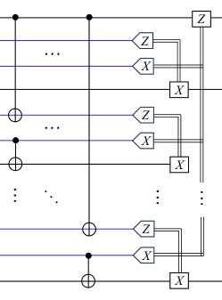


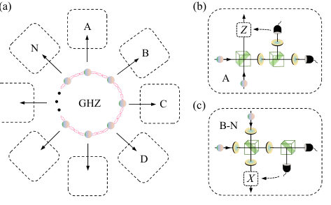
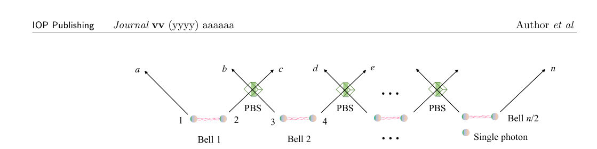
← Index · ← Previous · Next →
Authors: Wen-Qiang Liu, Hai-Rui Wei
Type: both · Category: quantum information and computing · PDF: https://arxiv.org/pdf/2610.18049v1
Analysis basis: full PDF text, analyzed in chunks
Topic relevance: 🔥 quantum optics experiment 4/5 · QC/QI experiment 1/5 · interference shaping light 1/5



Summary. This paper presents an optimized scheme for implementing the crucial $n$-qubit quantum fan-out gate ($C_n$) required for quantum networks. By leveraging pre-shared GHZ states, the authors drastically reduce the required number of gates compared to existing methods. They further demonstrate the experimental feasibility of this scheme using advanced linear optical architectures for photonic qubits.
Why it may be interesting. This work is highly relevant to quantum optics and quantum information, as it provides concrete, resource-optimized blueprints for building the core components needed for large-scale quantum networking using photons.
Main problem. The paper addresses the critical need for scalable, long-distance quantum fan-out gates ($C_n$) necessary for distributed quantum computation and quantum networks.
Main result. The authors propose an efficient protocol using pre-shared GHZ states and local CNOT gates, significantly reducing gate counts compared to standard decomposition methods. They also developed high-success-probability optical architectures for heralded and post-selected gates.
Method. The work compares a standard decomposition-based approach against a novel scheme utilizing pre-shared multi-qubit entangled states (GHZ) and local operations, implemented both abstractly (qubit model) and physically (linear optics/photons).
Model / system. The primary focus is on implementing the $n$-qubit fan-out gate ($C_n$) using photonic qubits encoded in polarization states. The protocols are demonstrated using linear optics components like Polarizing Beam Splitters (PBSs) and Half-Wave Plates (HWPs).
Key observables. Gate counts (CNOT, Hadamard), success probabilities (e.g., $\left( rac{1}{2} ight)^{3n-1}$), and fidelity under noise.
Important parameters / regimes. The efficiency calculations involve parameters like $\eta_s$ (per-photon survival efficiency) and $\eta_d$ (detection efficiency), which are crucial for assessing experimental feasibility.
Assumptions / limitations. The efficiency calculations rely on specific, state-of-the-art experimental parameters for photon sources and detectors. The protocol assumes the availability of a pre-shared $n$-qubit GHZ state.
Figures summary. Figures illustrate the quantum circuits for the standard decomposition-based $C_n$ gate and the proposed efficient $C_n$ gate using ancillary GHZ states. Another figure details the linear optics setup for the heralded $C_3$ gate using PBSs and HWPs.
Paper structure. The paper first establishes the problem of scalable long-distance $C_n$ gates. It then details the resource reduction achieved by using GHZ states over standard decomposition. Finally, it translates these concepts into concrete, high-fidelity optical architectures for heralded and post-selected gates.
Scalable long-distance quantum gates are essential for distributed quantum computation and scalable quantum networks. We propose an efficient scheme for implementing an $n$-qubit fan-out gate $C^n$ (also known as a controlled-NOT-$\cdots$-NOT gate) across spatially separated parties. Our protocol requires only a pre-shared $n$-qubit Greenberger-Horne-Zeilinger state, $n$ local controlled-NOT (CNOT) gates, and feed-forward operations, thereby reducing both the CNOT and Hadamard gate counts by $(n-2)$ when compared with the standard decomposition-based approach. We further develop two optical architectures to implement the heralded and post-selected $n$-photon fan-out gates, respectively. These schemes require fewer single photons resources and achieve higher success probabilities than their decomposition-based counterparts, representing significant improvements. The results indicate that our approach is experimentally feasible and pave the way toward practical long-distance quantum computation.
Authors: Adams Ivanov, Daniela Herrmann, Erick Giovani Sperandio Nascimento
Type: experiment · Category: quantum information and computing · PDF: https://arxiv.org/pdf/2610.18245v1
Analysis basis: full PDF text, analyzed in chunks
Topic relevance: 🔥 QC/QI experiment 4/5 · quantum measurements 1/5


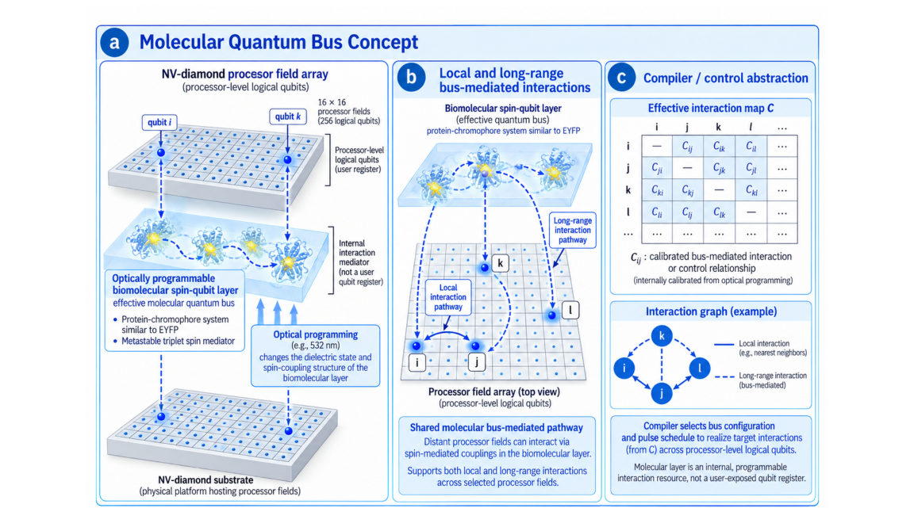


Summary. This paper reports on Zeus-256, a 256-qubit room-temperature NV-diamond quantum processor featuring a novel, optically programmable biomolecular quantum bus. The system was benchmarked across numerous quantum algorithms, demonstrating high fidelity in entanglement generation and factoring large numbers. It represents a significant step toward scalable, solid-state quantum computation by integrating multiple physical control mechanisms.
Why it may be interesting. The integration of a solid-state spin system (NV-diamond) with a bio-inspired, optically programmable quantum bus offers a novel, highly scalable pathway for realizing long-range connectivity in quantum computation, bridging solid-state physics with molecular engineering.
Main problem. Developing scalable quantum processors that can simultaneously address qubit coherence, control fidelity, readout, inter-qubit connectivity, and overall system complexity.
Main result. The authors demonstrated a 256-qubit room-temperature NV-diamond processor capable of running complex algorithms, achieving high fidelity in GHZ state preparation and factorizing 84-bit numbers.
Method. The system executes OpenQASM 2.0 circuits, transpiling them into sequences controlling microwave, RF, optical, and biomolecular bus configurations.
Model / system. The platform is Zeus-256, a room-temperature NV-diamond processor where each logical qubit combines an NV electron-spin ensemble with nuclear-spin memory. Connectivity is mediated by a proprietary, optically programmable biomolecular quantum bus.
Key observables. Bell-CHSH value ($S = 2.8008 \pm 0.0446$), GHZ+ fidelity (99.8960%), Grover search success rate (93.55%), and successful factor recovery for 8-84 bit integers.
Important parameters / regimes. 256 simultaneously active processor-level logical qubits in a $16 imes 16$ array; execution time of 551.694 ms for the 84-bit endpoint.
Assumptions / limitations. The biomolecular bus provides reconfigurable long-range interactions, but the timing metrics do not establish quantum advantage, and the 9,984-qubit scale is an engineering target.
Paper structure. The paper details the architecture, benchmarking across heterogeneous circuits (QFT, Grover, Shor, etc.), reporting quantitative results for entanglement fidelity and computational tasks.
We report Zeus-256, a room-temperature nitrogen-vacancy (NV) diamond processor with 256 simultaneously active processor-level logical qubits arranged in a 16 x 16 array. Each logical qubit combines an NV electron-spin ensemble with nuclear-spin memory and ancillary resources. OpenQASM 2.0 circuits are transpiled into RFSoC-controlled microwave, radio-frequency, optical, timing, measurement and bus-configuration sequences. An optically programmable proprietary protein-chromophore layer with an internal metastable-triplet spin mediator provides a reconfigurable biomolecular quantum bus for local and long-range interactions. Benchmarks cover QFT, GHZ entanglement, Grover search, arithmetic, variational, neural-network, graph-state and Shor-family circuits. Factor recovery is reported for 11 integers of 8-84 bits, with 10 attempts per instance; the 84-bit endpoint uses 256 qubits and 40,250,342 reported gates, with a reported execution time of 551.694 ms. Bell-CHSH measurements yield S = 2.8008 +/- 0.0446. Three-qubit Grover search returns the marked state in 958 of 1,024 shots (93.55%), compared with an ideal reference of 94.53%. A separate 30,000-shot population-and-parity protocol yields fixed-phase GHZ+ fidelity of 99.8960%, an estimated standard error of 0.2885 percentage points and a conservative physical 95% interval of [98.2342%, 100%]. Timing metrics are partial and do not establish quantum advantage. Scaling to 9,984 processor-level logical qubits is an engineering target, distinct from the demonstrated register.
Authors: Weiping Yuan, Silu Zhao, Li Li, Chenglin Deng, Zhenghe Liu, Yu Liu, Tianming Li, Mingchuan Wang, Bingjie Chen, Guihan Liang, Jiacheng Song, Jinming Guo, Shuaili Wang, Mingxuan Zhou, Xiaohui Song, Kai Xu, Heng Fan, Zhongcheng Xiang, Dongning Zheng
Type: experiment · Category: quantum information and computing · PDF: https://arxiv.org/pdf/2610.18477v1
Analysis basis: full PDF text, analyzed in chunks
Topic relevance: 🔥 QC/QI experiment 4/5 · quantum measurements 1/5
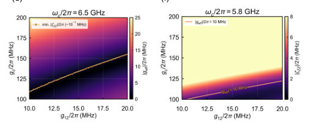
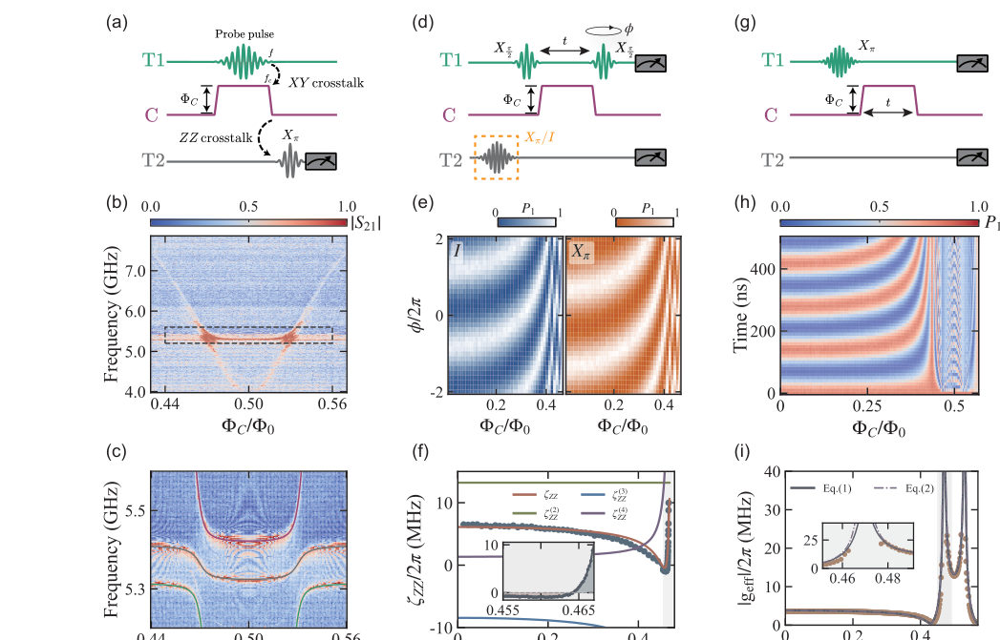

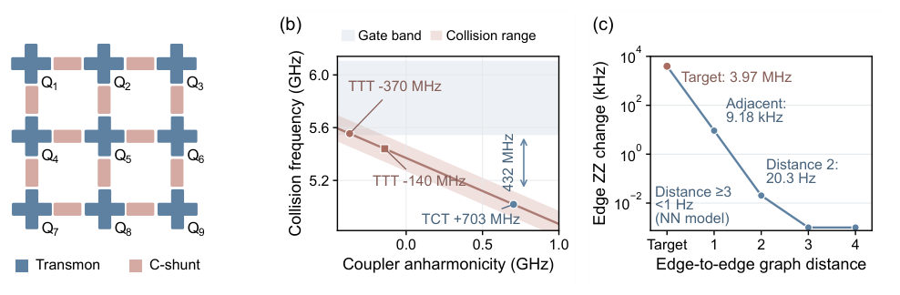

Summary. This paper reports the experimental realization of a C-shunt flux-qubit coupler connecting two transmon qubits. The device allows for precise tuning of qubit interactions, enabling the execution of a fast, high-fidelity Controlled-Z gate. The results confirm the feasibility of using such couplers to achieve both low-interaction idling and fast entangling operations.
Why it may be interesting. This work is highly relevant as it demonstrates a concrete, hardware-level solution for controlling qubit interactions in superconducting circuits, a core topic in quantum information processing.
Main problem. The challenge is to design a superconducting quantum processor that can perform fast, high-fidelity entangling gates while maintaining a low-interaction, low-error idling state.
Main result. The authors experimentally demonstrated a C-shunt flux-qubit coupler enabling a 45 ns Controlled-Z (CZ) gate with a fidelity of 99.23(15)%, while achieving single-qubit fidelities above 99.7%.
Method. The work combines spectroscopic characterization, conditional Ramsey measurements to tune residual ZZ interactions, and randomized benchmarking to quantify gate fidelities.
Model / system. The system is a transmon-C-shunt-transmon (TCT) device. The coupler is flux-tunable and provides a positively anharmonic spectrum, allowing precise control over the qubit-qubit interaction strength ($\zeta_{ZZ}$) and effective exchange ($g_{ ext{eff}}$).
Key observables. Single-qubit X-gate fidelities (>99.7%), CZ gate fidelity (99.23(15)%), residual ZZ interaction strength ($\zeta_{ZZ}$), and effective transverse exchange ($g_{ ext{eff}}$).
Important parameters / regimes. Gate time (45 ns), coupler anharmonicity ($\alpha_c/2\pi \simeq 703$ MHz), and energy relaxation times ($T_1$ for qubits and coupler).
Assumptions / limitations. The primary limitation identified is coupler energy relaxation, which numerical simulations suggest can be mitigated by extending the coupler lifetime.
Figures summary. The figures likely present spectroscopy results mapping out the flux-tunable spectrum, Ramsey fringe patterns showing $\zeta_{ZZ}$ tuning, and benchmarking results quantifying gate fidelities.
Paper structure. The paper follows a structure of problem definition (need for tunable interaction), characterization (spectroscopy, measuring $\zeta_{ZZ}$ and $g_{ ext{eff}}$), gate implementation (CZ gate sequence), and performance benchmarking (RB measurements).
Fast entangling gates and low-interaction idling require distinct operating conditions in superconducting quantum processors. We experimentally realize a transmon-C-shunt-transmon (TCT) device in which a flux-tunable, three-junction capacitively shunted flux-qubit coupler connects two transmon data qubits. The C-shunt coupler provides a flux-tunable, positively anharmonic spectrum for tailoring the interactions between the data qubits. Conditional Ramsey and swap measurements identify an idle region with near-zero residual ZZ interaction strength and suppressed transverse exchange. At this bias, simultaneous single-qubit interleaved randomized benchmarking yields X-gate fldelities above 99.7%, consistent with individual operation. A 45 ns nonadiabatic controlled-Z (CZ) gate achieves an interleaved randomized benchmarking fldelity estimate of 99.23(15)%. Numerical simulations identify coupler energy relaxation as an important limitation on CZ-gate fldelity and indicate that extending the coupler lifetime can improve gate performance. These results demonstrate the experimental feasibility of C-shunt flux-qubit couplers for combining low-interaction idling with fast entangling operations between transmon qubits.
Authors: Kavalambramalil George Paulson, Fu Li, Hanna Terletska
Type: theory · Category: other · PDF: https://arxiv.org/pdf/2610.17367v1
Analysis basis: full PDF text, analyzed in chunks
Topic relevance: Dicke superradiance 3/5 · Tavis-Cummings & cavity-many-emitter 3/5 · correlated / nonlocal dissipation 3/5 · interference shaping light 3/5 · methods for driven-dissipative 3/5 · Full counting statistics 2/5 · driven-dissipative phase transition 2/5 · superradiant laser 2/5 · Keldysh / 2PI / non-Gaussian methods 1/5 · analog quantum simulation 1/5 · non-equilibrium universality 1/5 · quantum measurements 1/5
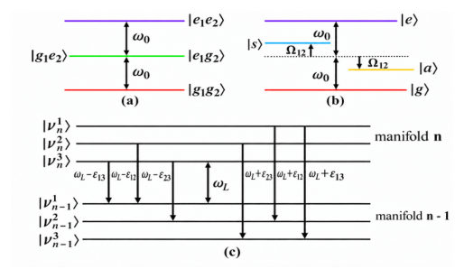


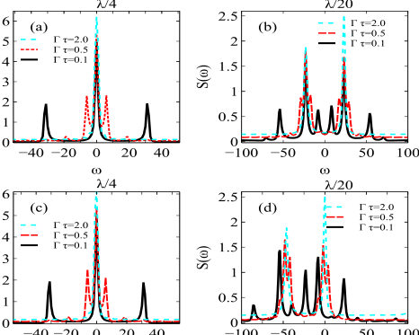

Summary. This paper explores controlling the light emitted by two coupled quantum emitters using periodic laser pulses. It demonstrates that pulsing allows for independent control over the emission spectrum and the photon statistics. This capability makes pulsed driving a powerful tool for tailoring quantum light sources compared to steady-state continuous driving.
Why it may be interesting. This work directly addresses quantum control in open quantum systems, showing how time-domain engineering (pulsing) can decouple spectral control from photon statistics control, which is highly relevant for designing quantum light sources.
Main problem. The study investigates how periodic pulsed driving can control the collective emission spectra and photon statistics of two interacting quantum emitters, comparing this to continuous-wave (CW) excitation.
Main result. Periodic pulsed driving offers a versatile control mechanism, allowing the photon statistics ($g^{(2)}$) to become insensitive to resonance conditions in the short-pulse limit, while the emission spectrum is still tunable by the inter-pulse delay ($ au_D$).
Method. The analysis uses the master equation formalism to model the time evolution of the two-emitter system under both CW and pulsed driving protocols.
Model / system. The system consists of two identical, dipole-dipole-coupled two-level emitters. The dynamics are governed by a Hamiltonian and a master equation incorporating collective decay and coupling strengths.
Key observables. Collective emission spectra and the two-time photon correlation function, $g^{(2)}(t, au)$.
Important parameters / regimes. Inter-pulse delay ($ au_D$), Rabi frequency ($\Omega$), and detuning ($\Delta$).
Assumptions / limitations. The analysis relies on the Born-Markov approximation and often utilizes the instantaneous-pulse limit approximation for pulsed driving.
Figures summary. Figures illustrate the energy level diagrams, the dependence of $g^{(2)}(t, au)$ on $ au_D$ for pulsed driving, and comparisons of $g^{(2)}$ under CW versus pulsed driving at different resonance conditions.
Paper structure. The paper develops the theoretical framework by defining the Hamiltonian and master equation, then analyzes the spectral properties under CW driving, and finally extends the analysis to periodic pulsed driving to compare the control capabilities over spectra and photon statistics.
We investigate the collective emission spectra and photon correlations of two identical dipole-dipole-coupled emitters under continuous-wave (CW) and periodic pulsed driving. Our results show that a periodic train of instantaneous $π_x$ pulses can generate emission spectra whose dominant features closely resemble those obtained under CW excitation. We find that the structure of the collective emission spectra reflects the interplay among the resonance conditions, dipole-dipole coupling, and the inter-pulse delay $τ_D$. We further demonstrate that finite-duration $π_x$ pulses with sufficiently high Rabi frequencies can closely reproduce the ideal instantaneous-pulse limit. In contrast to the emission spectra, the photon correlations $g^{(2)}(t,τ)$ are governed primarily by $τ_D$ and, unlike under CW driving, become increasingly insensitive to the resonance conditions in the short-pulse limit. These results establish periodic pulsed driving as a versatile means of tailoring both the emission spectra and the photon statistics of coupled two-emitter systems.
Authors: C. -Y. Lee, G. -D. Lin, H. H. Jen, K. -T. Lin
Type: theory · Category: other · PDF: https://arxiv.org/pdf/2610.17834v1
Analysis basis: full PDF text, analyzed in chunks
Topic relevance: Tavis-Cummings & cavity-many-emitter 3/5 · analog quantum simulation 3/5 · correlated / nonlocal dissipation 3/5 · interference shaping light 3/5 · Keldysh / 2PI / non-Gaussian methods 2/5 · driven-dissipative phase transition 2/5 · methods for driven-dissipative 2/5 · non-equilibrium universality 1/5


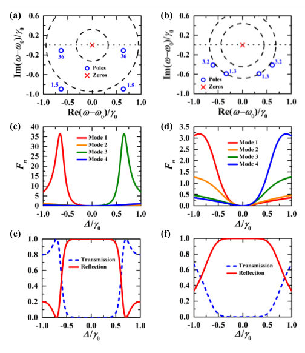

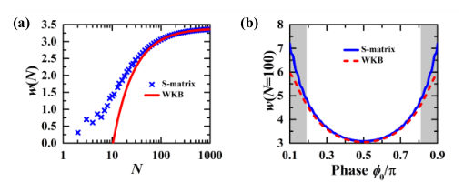
Summary. This theoretical study demonstrates that by spatially engineering the coupling strength between emitters and a waveguide, one can significantly broaden the reflection band of atomic mirrors. Using advanced scattering and WKB methods, the authors show that this engineering equalizes the radiative widths of collective modes, leading to broadband, high-reflectivity windows. This establishes coupling profile design as a powerful tool for quantum optical device realization.
Why it may be interesting. This work provides concrete, tunable methods (spatial coupling engineering) to overcome fundamental limitations (Fabry-Perot oscillations) in designing high-performance quantum optical components like atomic mirrors.
Main problem. The paper investigates how engineering the coupling between emitters and a waveguide can broaden the reflection band of atomic mirrors.
Main result. A Gaussian coupling profile successfully broadens the high-reflectivity window and suppresses detrimental Fabry-Perot oscillations compared to uniform arrays. Furthermore, an algebraic 1/N scaling law for the bandwidth contraction toward the bulk limit was derived.
Method. The study employs exact scattering calculations combined with spectral factorization and a semiclassical WKB analysis on the single-excitation sector.
Model / system. The system is a finite array of $N$ two-level emitters coupled to a 1D waveguide in a Waveguide Quantum Electrodynamics (QED) setup. The dynamics are governed by an effective non-Hermitian Hamiltonian.
Key observables. Reflection bandwidth, transmission ($t$) and reflection ($r$) amplitudes, and the distribution of collective poles in the complex frequency plane.
Important parameters / regimes. The coupling profile width ($\sigma$), the number of emitters ($N$), and the local decay rates ($\gamma_j$) are key parameters.
Assumptions / limitations. The analysis operates within the single-excitation sector, the Markovian approximation, and assumes linear photon dispersion.
Figures summary. Figures illustrate the reflection spectrum $|r|^2$ vs. detuning ($\Delta$) for different coupling strengths, showing broadening, and map the high-reflectivity bandwidth across the coupling parameter space.
Paper structure. The paper progresses from defining the physical model and Hamiltonian, to applying scattering theory to analyze the reflection spectrum, and finally deriving the finite-size scaling laws by mapping the problem to a continuous Helmholtz equation.
We theoretically investigate single-photon coherent transport through a finite waveguide quantum electrodynamics (QED) array with spatially modulated emitter-waveguide couplings. By combining exact scattering calculations with spectral factorization and a semiclassical WKB analysis, we identify how the coupling profile controls the reflection bandwidth and its finite-size dependence. A Gaussian transverse displacement produces an exponential-of-Gaussian decay-rate profile that broadens the high-reflectivity window and suppresses the boundary-induced Fabry-Perot oscillations compared with a uniform array. The transmission zeros remain exactly degenerate at the atomic resonance for arbitrary positive coupling profiles at non-Bragg spacings. In contrast, the collective poles reorganize under the spatial modulation, redistributing their radiative widths and preventing individual subradiant resonances from terminating the reflection window. We further derive an algebraic 1/N scaling law for the contraction of the bandwidth toward its bulk value. The bulk bandwidth is determined by the largest local decay rate, whereas the finite-size correction increases as the profile becomes sharper, leading to an optimal profile width. These results establish spatial coupling engineering as a practical tool for designing broadband atomic mirrors in atom-nanofiber and circuit-QED platforms.
Authors: Sander Stammbach, Giulio Gasbarri, Stefan Nimmrichter
Type: theory · Category: statistical mechanics · PDF: https://arxiv.org/pdf/2610.18237v1
Analysis basis: full PDF text, analyzed in chunks
Topic relevance: driven-dissipative phase transition 3/5 · methods for driven-dissipative 3/5 · non-equilibrium universality 3/5 · quantum measurements 3/5 · Keldysh / 2PI / non-Gaussian methods 2/5 · analog quantum simulation 1/5 · correlated / nonlocal dissipation 1/5 · scars & prethermalization 1/5


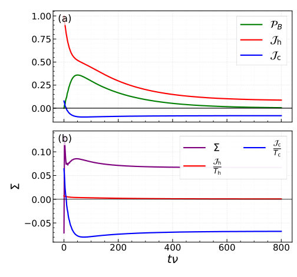


Summary. This paper models a quantum engine based on a mechanical Maxwell Demon, where a qubit interacts with a mechanical oscillator pointer to extract energy from a thermal bath. The pointer acts autonomously by conditioning the qubit's energy transfer to a quantum battery, allowing the system to perform work continuously. The analysis uses advanced master equation techniques to confirm the operational feasibility and quantify the extracted energy.
Why it may be interesting. This work directly addresses non-equilibrium thermodynamics and information theory by building a quantum mechanical realization of a classical concept (Maxwell's Demon), which is highly relevant to open quantum systems and energy transduction.
Main problem. The paper develops a fully autonomous model of a mechanical Maxwell demon engine designed to convert heat absorbed by a qubit into useful work stored in an attached quantum battery.
Main result. The system successfully operates as a continuous thermal machine, demonstrating energy extraction quantified by the battery's steady-state ergotropy, all driven by the internal information processing of the mechanical pointer.
Method. The dynamics are analyzed using Lindblad master equations (local, global, and TCL2 forms) to model the coupled system, comparing theoretical predictions against established thermodynamic principles.
Model / system. The model consists of three coupled components: a qubit (working medium), a damped mechanical oscillator (the information-acquiring pointer), and a quantum battery (spin system). The coupling is governed by a Holstein-type Hamiltonian, enabling state-dependent resonance shifts.
Key observables. Steady-state population inversion of the battery (quantified by ergotropy), energy currents ($ ext{J}_h, ext{J}_c$), and entropy production ($\Sigma$).
Important parameters / regimes. The efficiency depends critically on the pointer relaxation rate ($\gamma_c$) being faster than the qubit dynamics ($\gamma_h$), and achieving resonance at $\omega_B \simeq \omega_0 - 2\lambda^2 u$.
Assumptions / limitations. The analysis assumes the pointer relaxation is fast compared to qubit dynamics, and it compares results derived from various master equation approximations (Local vs. Global BMS vs. TCL2).
Figures summary. Figures schematically illustrate the coupled system (qubit, oscillator, battery) and show time evolution plots comparing population dynamics predicted by different master equation formalisms.
Paper structure. The paper first establishes the physical model and the autonomous mechanism using the Holstein Hamiltonian. It then derives the necessary master equations, analyzes the resonance condition, and finally discusses the comparison between different theoretical descriptions (Lindblad vs. TCL2) and potential experimental platforms.
We present a fully autonomous model of a mechanical Maxwell demon engine that converts heat absorbed by a qubit into population inversion in an attached quantum battery. A damped mechanical oscillator acts as a pointer that incorporates the essential demon function of information acquisition about the qubit state and subsequent feedback into the system dynamics, replacing external measurements and control operations. This is achieved by means of a Holstein-type Hamiltonian, which makes the pointer's equilibrium position depend on the qubit state and thereby induces a state-dependent resonance shift. The mechanism enables a selective energy transfer to an attached spin system that acts as the quantum battery. We derive both local and global Lindblad master equations for the coupled system and identify the parameter regimes in which the engine operates efficiently. The figure of merit is the resulting steady-state population inversion of the battery, quantified in terms of ergotropy. Based on these results, we discuss the necessary conditions for practical implementations of the demon engine on realistic experimental platforms.
Authors: Xi Hu, Yan-Qiong Ma, Su-Peng Kou
Type: theory · Category: strongly correlated electrons · PDF: https://arxiv.org/pdf/2610.18175v1
Analysis basis: full PDF text, analyzed in chunks
Topic relevance: correlated / nonlocal dissipation 3/5 · driven-dissipative phase transition 3/5 · Keldysh / 2PI / non-Gaussian methods 2/5 · analog quantum simulation 2/5 · methods for driven-dissipative 2/5 · non-equilibrium universality 2/5 · Full counting statistics 1/5 · quantum measurements 1/5

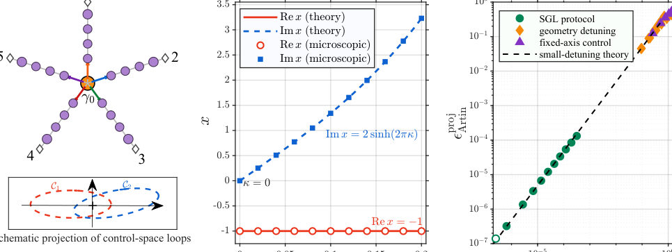


Summary. This work introduces non-Hermitian statistical geometry to study quantum statistics beyond the standard boson-fermion dichotomy. It develops a theory showing that relaxing Hermiticity enriches the exchange dynamics, which are then constrained by consistency conditions derived from braid and fusion algebra. The results provide a deep link between complex spectral data and geometric properties in topological matter.
Why it may be interesting. The framework provides a powerful mathematical tool to study how topological constraints break down or evolve when physical symmetries (like Hermiticity) are broken, which is highly relevant for understanding dissipative or open quantum systems in condensed matter.
Main problem. The paper develops a theory of non-Hermitian statistical geometry to understand how quantum statistics behave when the underlying microscopic Hamiltonian is non-Hermitian, relaxing the rigidity found in conventional topological phases.
Main result. Non-Hermiticity enriches the exchange response by allowing relative channel amplification alongside relative phase, leading to a sequence where braid consistency, fusion coherence, and projective flatness sequentially constrain the exchange geometry.
Method. The authors use non-Hermitian generalizations of topological concepts, employing Kato transport, analyzing relative eigenline geometry, and testing consistency via generalized braiding and fusion equations.
Model / system. The theory applies to particle exchange in two dimensions, relevant to fractional quantum Hall physics and strongly correlated quantum matter. It analyzes the extension of conventional anyon theory into non-Hermitian regimes, using models like the Kitaev-Majorana network.
Key observables. Projective exchange spectrum ($q$), relative eigenline geometry ($x$), projective Kato curvature, and various coherence residuals ($\epsilon_{ ext{micro pent}}$, $\eta_{ ext{hex}}$).
Important parameters / regimes. The non-Hermiticity parameter (relaxing Hermiticity), the level $k$ of $SU(2)_k$, and the coupling strength $J_{ ext{split}}$ in finite-chain calculations.
Assumptions / limitations. The analysis relies on extending rigid unitary exchange data into a complex space and assumes the applicability of concepts like the Artin relation and the Pentagon/Hexagon equations.
Figures summary. Figures illustrate the relationship between the single-exchange spectrum and relative geometry via the Artin relation, and later show convergence diagnostics for small-loop holonomy tests confirming predicted analytic curvature values.
Paper structure. The paper progresses by first introducing the non-Hermitian framework, establishing the exact spectrum-geometry locking relation ($x = q + q^{-1} - 1$), and then rigorously testing this geometry using complex fusion and loop coherence diagnostics in finite-chain models.
Particle exchange in two dimensions gives rise to quantum statistics beyond the boson-fermion dichotomy, with central roles in fractional quantum Hall physics, topological quantum computation, and strongly correlated quantum matter. In conventional topological phases, microscopic exchange geometry is compressed into rigid braid and fusion data. We develop a theory of non-Hermitian statistical geometry in which relaxing Hermiticity softens these exchange data into a larger complex space of spectral and relative-geometric degrees of freedom. For two adjacent braid generators, a single projective exchange spectrum is insufficient: their relative eigenline geometry supplies an additional gauge-invariant modulus. On the generic irreducible two-channel branch, braid consistency locks these coordinates through an exact spectrum-geometry relation. Using Riesz projectors and Kato transport, we realize this geometry in a five-arm Kitaev-Majorana network and test spectral and relative-geometric responses in an independent two-dimensional four-vortex Kitaev model. Finite-time dynamics tests the exchange operation, microscopic fusion sewing tests its composition across fusion descriptions, and matched-spectrum controls isolate the role of relative geometry. Nonzero projective Kato curvature shows that braid-consistent, fusion-coherent exchange can depend on the control path. Non-Hermiticity thus exposes exchange geometry, braid consistency re-locks it, fusion coherence further constrains it, and projective flatness determines when geometric exchange becomes intrinsically topological.
Authors: Y. -J. Shen, Y. -C. Shen, C. -H. Chu, H. H. Jen
Type: theory · Category: statistical mechanics · PDF: https://arxiv.org/pdf/2610.17599v1
Analysis basis: full PDF text, analyzed in chunks
Topic relevance: driven-dissipative phase transition 3/5 · methods for driven-dissipative 3/5 · Keldysh / 2PI / non-Gaussian methods 2/5 · non-equilibrium universality 2/5 · Tavis-Cummings & cavity-many-emitter 1/5 · analog quantum simulation 1/5 · correlated / nonlocal dissipation 1/5 · quantum measurements 1/5 · scars & prethermalization 1/5

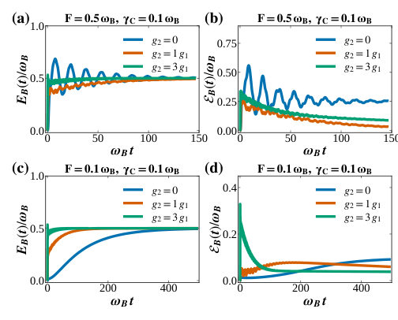
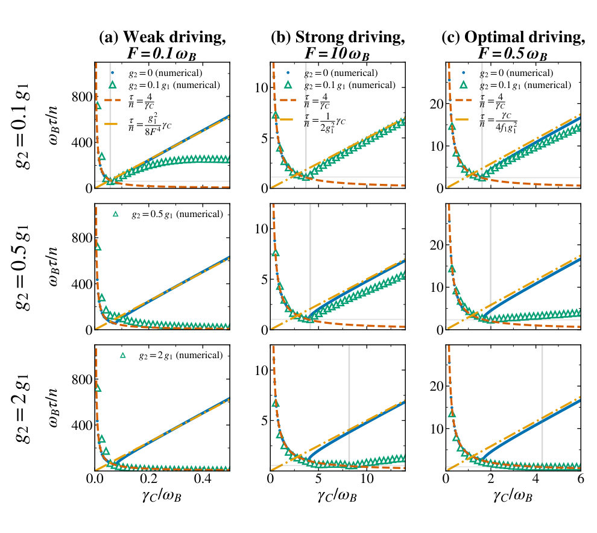
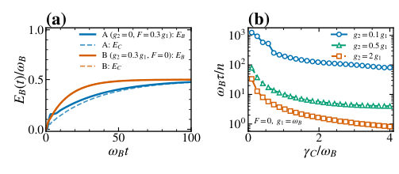
Summary. This theoretical work demonstrates that nonlinear coupling between a charger and a quantum battery can substantially accelerate the rate of energy charging. By analyzing the system dynamics under various driving conditions, the authors show that nonlinear interactions provide a unique resource for enhancing energy storage efficiency. This finding broadens the understanding of interaction-enabled quantum advantages in energy transfer.
Why it may be interesting. This work directly addresses open quantum systems dynamics, specifically energy transfer and non-equilibrium thermodynamics, which are central to AMO physics and quantum optics.
Main problem. The paper investigates how nonlinear couplings can accelerate the charging process of quantum batteries, aiming to find energy transfer mechanisms superior to classical or linear quantum models.
Main result. Nonlinear charger-battery interactions significantly accelerate charging time, establishing nonlinear coupling as an effective resource for energy storage, even surpassing the performance of external driving fields.
Method. The study uses theoretical modeling based on the density matrix evolution governed by a master equation incorporating linear, nonlinear, and driving terms.
Model / system. The system is a charger-mediated quantum battery, modeled by a Hamiltonian including linear ($g_1$) and nonlinear ($g_2$) coupling terms, and evolving under dissipation ($\gamma_C$) and external driving ($F$).
Key observables. Charging Time ($ au$), Battery Energy ($E_B$), and Ergotropy (quantifying extractable work).
Important parameters / regimes. Coupling strengths ($g_1, g_2$), driving field strength ($F$), and dephasing rate ($\gamma_C$); analysis covers weak, strong, and optimal driving regimes.
Assumptions / limitations. The analysis assumes the resonance condition ($\omega_C = \omega_B = \omega_D$) and compares results across different coupling regimes.
Figures summary. Figures illustrate the time evolution of energy and ergotropy, and plot charging time ($ au$) versus dephasing rate ($\gamma_C$) for various coupling strengths, demonstrating the reduction in $ au$ due to $g_2$.
Paper structure. The paper progresses by defining the system Hamiltonian and master equation, deriving key observables like energy and ergotropy, and then systematically analyzing the impact of nonlinear coupling ($g_2$) across different driving regimes (weak, strong, and undriven) to quantify the acceleration of charging dynamics.
Charger-mediated quantum batteries offer promising opportunities for efficient energy transfer and storage at the quantum level, with potential advantages beyond their classical counterparts. Here, we theoretically demonstrate that nonlinear charger-battery interactions can substantially accelerate the charging of quantum batteries. In the weak-driving regime, sufficiently strong nonlinear coupling can dominate over the effect of dephasing and significantly reduce the charging time. In the strong- and optimal-driving regimes, where the optimal driving strength maximizes the steady-state ergotropy in the linear-coupling regime, nonlinear coupling gives rise to a new optimum in the charging time beyond that of the linear-coupling regime, accompanied by nearly critically damped dynamics. Remarkably, even in the absence of external driving, nonlinear coupling alone can substantially reduce the charging time, providing an alternative route toward fast battery charging. Our results establish nonlinear charger-battery coupling as an effective resource for accelerating quantum-battery charging and broaden the scope of interaction-enabled quantum advantages in energy transfer and storage.
Authors: Praveen Balaji, Patrick Draper, Enrico Rinaldi
Type: both · Category: statistical mechanics · PDF: https://arxiv.org/pdf/2610.17470v1
Analysis basis: full PDF text, analyzed in chunks
Topic relevance: analog quantum simulation 3/5 · non-equilibrium universality 3/5 · Keldysh / 2PI / non-Gaussian methods 2/5 · QC/QI experiment 2/5 · driven-dissipative phase transition 2/5 · methods for driven-dissipative 2/5 · quantum measurements 1/5
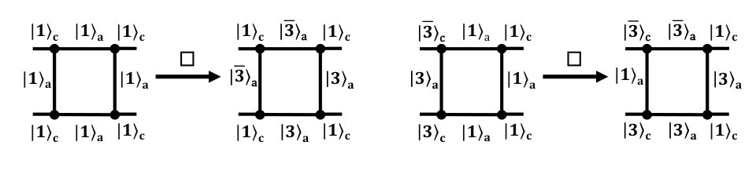
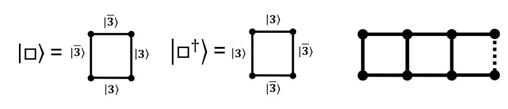


Summary. This work tackles the challenging problem of simulating real-time scattering in lattice gauge theory using quantum computers. The authors develop specific time-domain observables to extract resonance information, moving beyond traditional spectral methods. By applying these techniques to a simplified toy model, they demonstrate the potential for near-term quantum hardware to probe complex quantum field dynamics.
Why it may be interesting. The focus on real-time, non-equilibrium dynamics and the development of hardware-implementable observables for strongly interacting quantum field theories makes this highly relevant for AMO physicists studying open quantum systems.
Main problem. The paper investigates non-equilibrium quantum dynamics, specifically the real-time scattering processes of glueballs in pure SU(3) lattice gauge theory.
Main result. The authors propose time-domain observables to extract resonance properties from quantum simulations and demonstrate feasibility on near-term quantum hardware using a toy model.
Method. The study combines classical exact diagonalization for resonance characterization with quantum simulation techniques, including the use of a toy model implemented on a superconducting quantum processor.
Model / system. The physical system is glueball scattering in pure SU(3) lattice gauge theory, modeled on a one-dimensional plaquette chain. The Hamiltonian is derived from the Kogut-Susskind formulation, and the analysis utilizes techniques like the Friedrichs model to describe the resonance.
Key observables. Time-domain observables for resonance extraction, the avoided crossing gap (Delta_AC), and single/two-particle dispersion relations.
Important parameters / regimes. The coupling constant g, the lattice size N, and the Trotterization step number n are key parameters.
Assumptions / limitations. The analysis relies on truncating the Hilbert space (e.g., 'B' truncation) and using a simplified 1D plaquette chain for feasibility demonstrations.
Figures summary. Figures illustrate single-particle and two-particle dispersion relations, the action of lattice operators, and the resource scaling required for quantum simulation circuits.
Paper structure. The paper progresses from establishing the physical problem (real-time scattering in lattice gauge theory) to developing theoretical tools (time-domain observables, effective Hamiltonians) and finally demonstrating feasibility using a simplified toy model on near-term quantum hardware.
Quantum computing may allow unprecedented access to nonequilibrium quantum dynamics, including problems of interest in particle physics, like the real-time development of scattering processes. Although fault-tolerant simulations at scale are still in the future, recent advancements toward early fault-tolerant simulations motivate building increasingly elaborate benchmark problems in order to assess state-of-the-art capabilities and test new algorithms and observables. In this work, we study glueball scattering on a line-of-plaquettes lattice in pure $SU(3)$ lattice gauge theory. We characterize scattering of the lowest-energy glueball states using classical exact diagonalization methods, identifying the continuum resonance structure using real-time simulations and approximate analytic methods, and we propose time-domain observables for extracting properties of the resonance from quantum simulations. We furthermore construct a toy model that shares the spectral features of the lattice gauge theory and demonstrate extraction of the observables. Feasibility on near-term hardware is demonstrated through simulation of a resonant collision of this toy model on Quantinuum System Model $\texttt{H2-2}$, with a 14-plaquette chain encoded in 28 qubits. The Trotterized circuit after optimization and compression requires $\sim 25n$ entangling gates for $n$ Trotter steps.
Authors: Chenrui Bi, Hong-Mei Zou, Zhao-Yang Tong, Zijin Liang
Type: theory · Category: other · PDF: https://arxiv.org/pdf/2610.18362v1
Analysis basis: full PDF text, analyzed in chunks
Topic relevance: Tavis-Cummings & cavity-many-emitter 3/5 · correlated / nonlocal dissipation 3/5 · driven-dissipative phase transition 2/5 · methods for driven-dissipative 2/5 · Keldysh / 2PI / non-Gaussian methods 1/5 · analog quantum simulation 1/5 · non-equilibrium universality 1/5 · quantum measurements 1/5
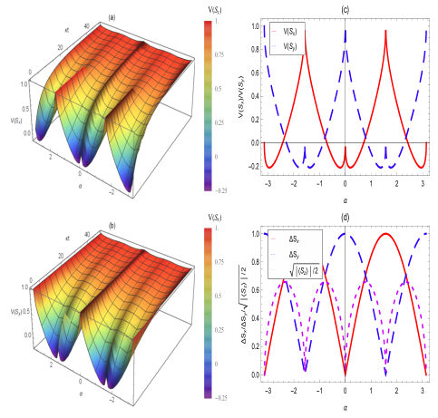
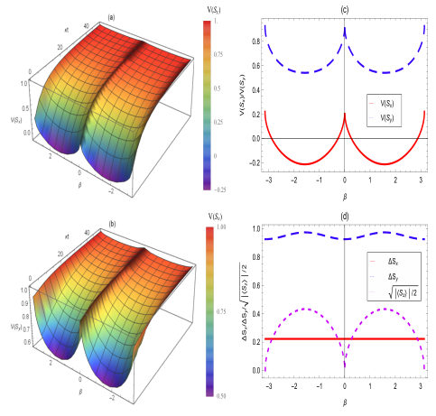


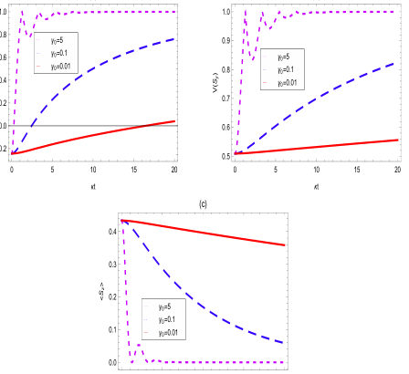
Summary. This theoretical study analyzes variance squeezing in a V-type atom coupled to a dissipative cavity. It finds that while squeezing alternates between $S_x$ and $S_y$ based on initial conditions, the $S_x$ squeezing depth is robustly determined by initial states. Furthermore, the research demonstrates that weak cavity coupling and appropriate detuning can significantly enhance the longevity of this quantum resource.
Why it may be interesting. This work provides detailed insights into how dissipation and external control parameters (like detuning) can be leveraged to protect and enhance quantum correlations, which is crucial for quantum communication protocols.
Main problem. The paper investigates the variance squeezing of a V-type atom when it interacts with a dissipative cavity environment.
Main result. The $S_x$ variance squeezing depth is shown to be determined solely by the initial atomic parameters, independent of system parameters, while weak coupling and detuning enhance its robustness.
Method. The analysis involves deriving the reduced density matrix and calculating variance squeezing factors using the Heisenberg uncertainty relation for spin components.
Model / system. The system is a V-type three-level atom coupled to a single-mode dissipative cavity. The dynamics are governed by the system Hamiltonian and analyzed by tracing out the environment degrees of freedom.
Key observables. Variance squeezing factors ($V(S_x)$ and $V(S_y)$), standard deviations ($\Delta S_x, \Delta S_y$), and the expectation value $\langle S_z angle$.
Important parameters / regimes. Initial state parameter $\alpha$, cavity-environment coupling coefficient ($\kappa$), decay rate ($\gamma_0$), and detunings ($\Delta_1, \Delta_2$).
Assumptions / limitations. The study addresses the open system nature due to dissipation, moving beyond previous closed-system assumptions.
Figures summary. Figures illustrate the alternating nature of squeezing between $S_x$ and $S_y$ based on initial state parameters ($\alpha$), and show that $V(S_x)$ persistence is enhanced by weaker coupling ($\gamma_0/\kappa$) and increased detuning ($\Delta$).
Paper structure. The paper first establishes the theoretical framework for variance squeezing in the open system. It then analyzes the dependence on initial state parameters ($\alpha$), followed by a detailed study of system parameters, including coupling strength ($\gamma_0/\kappa$), the SGI parameter ($ heta$), and detuning ($\Delta$).
Variance squeezing of a V-type atom interacting with a dissipative cavity is investigated. First, the influence of atomic initial state parameters on the variance squeezing is explored. The results show that the atomic variance squeezing switches alternately between Sx and Sy as the initial state parameter alpha sweeps from -pi to pi. The two squeezing intervals are symmetric about alpha = pi/4, each with a width of pi/2. For alpha = pi/14, only the Sx component can generate variance squeezing and will eventually disappear with time evolution due to unavoidable environmental noise. Then, the influence of system parameters on the variance squeezing is also studied. It is found that, the optical variance squeezing depth of Sx is determined solely by the atomic initial parameters and is independent of the system parameters. Both weak cavity-environment coupling and atom-cavity detuning can significantly enhance the robustness of the Sx variance squeezing. The SGI parameter has an extremely weak influence on variance squeezing. These results are beneficial for high-precision quantum communication applications.
Authors: Andrew Laeuger, Nancy Aggarwal
Type: theory · Category: other · PDF: https://arxiv.org/pdf/2610.17475v1
Analysis basis: full PDF text, analyzed in chunks
Topic relevance: quantum measurements 3/5 · Keldysh / 2PI / non-Gaussian methods 2/5 · methods for driven-dissipative 2/5 · Tavis-Cummings & cavity-many-emitter 1/5 · analog quantum simulation 1/5 · correlated / nonlocal dissipation 1/5 · driven-dissipative phase transition 1/5 · interference shaping light 1/5


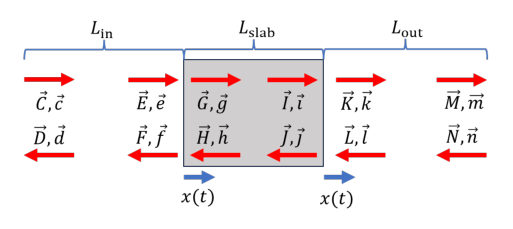


Summary. This paper develops a comprehensive, self-consistent mathematical framework for analyzing cavity optomechanics involving dielectric sensors. It overcomes limitations of previous models by treating the dielectric's field restructuring non-perturbatively. The resulting formalism allows for accurate calculation of optical forces and mechanical back-action, crucial for designing next-generation quantum detectors.
Why it may be interesting. This work is highly relevant as it provides advanced theoretical tools for modeling quantum light-matter interactions in complex, non-linear optical cavities, which is central to modern quantum sensing and cavity QED.
Main problem. The paper addresses the lack of a self-consistent mathematical framework for simulating cavity optomechanics when a finite-thickness dielectric plate significantly restructures the intracavity optical field.
Main result. A new formalism is developed that incorporates Fresnel reflection, internal propagation, optical forces, and mechanical back-action directly into the field equations, providing a systematic starting point for detector response calculations.
Method. The methodology extends the vacuum two-photon formalism by solving the field evolution across free space, moving mirrors, and the dielectric slab using quadrature decomposition.
Model / system. The system is a cavity containing a planar, levitated dielectric sensor. The model treats the interaction non-perturbatively, accounting for the dielectric's full optical response rather than assuming a fixed field basis.
Key observables. Carrier and sideband transfer functions, optical forces (DC and AC), mechanical back-action, and the total noise budget for detector response.
Important parameters / regimes. Dielectric thickness ($L_s$), cavity length ($L_c$), trap laser power ($P_{ ext{trap}}$), and the sensor's refractive index ($n$).
Assumptions / limitations. The model assumes fields are well-described by plane waves propagating between surfaces of infinite areal extent aligned with the cavity axis, and that all optics are lossless.
Figures summary. Fig. 1 shows the basic setup with two coaxial lasers and the dielectric sensor. Fig. 3 illustrates the field entering, propagating within, and leaving the moving dielectric slab.
Paper structure. The paper builds the framework by first defining the field evolution across different optical elements (free space, moving mirrors, dielectric slab) using the two-photon formalism, leading to self-consistent calculations of forces and back-action.
Cavity optomechanical models typically treat a sensor either as a perturbative polarizable object in a pre-existing optical field, or solve the field at a fixed equilibrium and linearize in a fixed optical-mode basis. Neither self-consistently determines the spatially resolved cavity field, the optical force, the mechanical equilibrium, and the back-action when a finite-thickness dielectric plate intercepts the entire optical mode and restructures the intracavity field. In this companion paper to [1], we develop that treatment by extending the vacuum two-photon formalism to finite-thickness planar dielectrics, incorporating their Fresnel reflection, internal propagation, optical forces, and mechanical back-action directly into the field equations. We derive the carrier and sideband transfer functions needed to describe the coupled optical-mechanical system, including optomechanical cooling and the response to external perturbations. The result is a systematic starting point for calculating detector response and noise budgets for cavity experiments with intracavity dielectrics, including gravitational wave detectors deploying levitated sensors.
Authors: Konstantinos Kontogeorgiou, İnanç Adagideli, Géraldine Haack, Fabian Hassler
Type: theory · Category: statistical mechanics · PDF: https://arxiv.org/pdf/2610.17257v1
Analysis basis: full PDF text, analyzed in chunks
Topic relevance: driven-dissipative phase transition 3/5 · non-equilibrium universality 3/5 · Keldysh / 2PI / non-Gaussian methods 2/5 · methods for driven-dissipative 2/5 · correlated / nonlocal dissipation 1/5 · quantum measurements 1/5


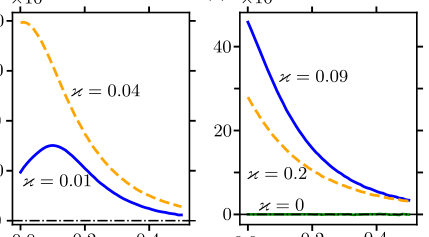


Summary. The authors propose using a superconducting diode as a physical realization of a Feynman ratchet to build a nanoscale heat engine. By exploiting thermal fluctuations across a temperature gradient, the device can generate directed work, demonstrating energy conversion efficiency. Furthermore, the analysis shows it can operate in reverse, functioning as a Peltier cooler.
Why it may be interesting. This work directly addresses non-equilibrium thermodynamics and energy conversion at the nanoscale, which is a key area connecting statistical mechanics to quantum phenomena and open quantum systems.
Main problem. To realize a nanoscale heat engine by converting thermal energy into work using a superconducting diode acting as a Feynman ratchet.
Main result. The setup successfully functions as a heat engine, generating work from a temperature gradient via thermal fluctuations, and can also operate as a Peltier cooler by reversing the applied current.
Method. The dynamics are analyzed using Langevin equations to model the superconducting phases under thermal fluctuations, and thermodynamic principles (First Law) are applied to calculate work and heat flow.
Model / system. The system is a superconducting circuit incorporating a Josephson junction-based diode, coupled to two thermal reservoirs at different temperatures ($T_1$ and $T_2$).
Key observables. Output power, efficiency ($\eta$), Seebeck coefficient ($S$), open-circuit voltage ($V_1$), work ($\dot{W}$), and heat flows ($\dot{Q}_1, \dot{Q}_2$).
Important parameters / regimes. Temperature gradient ($\Delta T = T_2 - T_1$), coupling strength ($\kappa$), and external bias current ($I_{ ext{ext}}$).
Assumptions / limitations. The analysis assumes a small effective inductance ($V_1 \approx V_2$) and focuses on the regime where work extraction is driven by thermal fluctuations.
Figures summary. Figures illustrate the efficiency ($\eta$) dependence on reservoir temperatures and coupling strength, and show the optimal conditions for maximum efficiency, confirming the heat engine and cooling capabilities.
Paper structure. The paper first establishes the physical model and theoretical framework using Langevin equations. It then analyzes the heat engine performance by calculating work and efficiency, followed by an investigation of the reverse operation (Peltier cooling) using the Seebeck coefficient.
Feynman's ratchet illustrates how work can be extracted from thermal fluctuations in the presence of two heat baths at different temperatures. While some experimental realizations of the ratchet effect have been studied, most lack miniaturization, which is important for some applications. Here, we propose a physical implementation of Feynman's ratchet based on Josephson junctions exhibiting the superconducting diode effect. This setup functions as a heat engine that generates work solely from a temperature gradient via thermal fluctuations. We analyze its output power and efficiency, and, through the Seebeck coefficient, identify the conditions under which the device operates in reverse, functioning instead as a Peltier cooler.
Authors: Sayan Sengupta, Anish Sharma, George Biswas, Anindya Biswas
Type: theory · Category: other · PDF: https://arxiv.org/pdf/2610.18582v1
Analysis basis: full PDF text, analyzed in chunks
Topic relevance: correlated / nonlocal dissipation 3/5 · methods for driven-dissipative 2/5 · quantum measurements 2/5 · Keldysh / 2PI / non-Gaussian methods 1/5 · analog quantum simulation 1/5 · driven-dissipative phase transition 1/5 · non-equilibrium universality 1/5

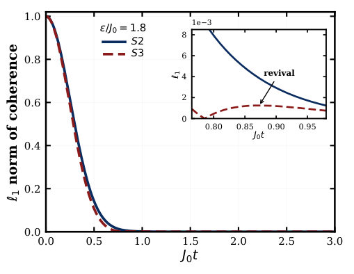
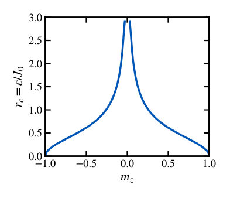

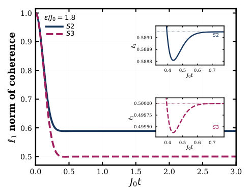
Summary. This theoretical study examines the robustness of non-Markovian quantum dynamics when the coupling to the environment is subject to unresolved disorder. The authors demonstrate that while disorder can make memory effects unresolvable, structural non-Markovianity can persist if the bath state physically fluctuates or if transverse interactions are present. This has implications for interpreting experimental measurements in open quantum systems.
Why it may be interesting. This work directly addresses the crucial experimental challenge of distinguishing true structural non-Markovianity from apparent Markovian behavior caused by measurement limitations or environmental averaging.
Main problem. The paper investigates whether a quantum system's dynamics can retain structural non-Markovianity (CP indivisibility) even when the memory effects are suppressed or become unresolvable due to unresolved quasi-static disorder in the system-bath coupling.
Main result. Transverse exchange interactions and physical fluctuations of the bath state are shown to preserve dynamical indivisibility against coupling disorder, even when memory signatures are suppressed.
Method. The analysis uses process tomography to reconstruct disorder-averaged dynamical maps and employs the criterion of CP divisibility to characterize Markovianity, extending results analytically to multiple bath spins.
Model / system. The model involves an open quantum system (spin qubit) coupled to a bath of spins. The coupling is subjected to quasi-static disorder, and the analysis compares different averaging procedures (fixed vs. fluctuating bath states).
Key observables. CP divisibility (for Markovianity), coherence revivals, and the $\ell_1$-norm of coherence.
Important parameters / regimes. Disorder strength ($\epsilon$), bath polarization, and the presence/absence of transverse exchange coupling.
Assumptions / limitations. The disorder is assumed to be quasi-static, and the analysis focuses on the divisibility of the disorder-averaged dynamical map.
Figures summary. Not specified, but the notes detail complex mathematical derivations involving multiple substitutions and transformations to evaluate integrals related to coherence measures.
Paper structure. The paper progresses by first analyzing the pure dephasing case with disorder, then generalizing to $N$ spins, introducing anisotropic Heisenberg interactions, and finally discussing the implications of physical bath state fluctuations.
We investigate how unresolved quasistatic disorder in system bath coupling affects non-Markovian dynamics in spin environments. The coupling is fixed within each experimental shot but varies between shots, so repeated shot tomography reconstructs a disorder averaged dynamical map. For a single spin bath with pure dephasing Ising interaction, disorder can drive a transition to CP-divisible dynamics for fixed bath preparations, with a critical strength set by bath polarization along the interaction axis. However, when the bath state fluctuates physically between shots, the averaged dynamics remain CP indivisible at any finite disorder strength. We extend these results analytically to inhomogeneously coupled pure dephasing baths of any number \(N\) of non-interacting spins. At any finite disorder strength, one unpolarized bath spin suffices to retain CP-indivisible dynamics, whereas a fully polarized bath yields Markovian (CP-divisible) dynamics. Dynamics with physically fluctuating bath states likewise remain non-Markovian (CP indivisible) at finite disorder for arbitrary \(N\) in the pure dephasing case. For anisotropic Heisenberg interactions, any nonzero transverse exchange eliminates the disorder driven transition to CP divisibility in a single spin bath. Exact diagonalization of anisotropic models with inhomogeneous couplings up to \(N=12\) reveals persistent trace distance revivals for fixed bath preparations, sampled Haar random preparations, and physically fluctuating bath states, showing that this effect of transverse exchange extends beyond a single bath spin. Increasing disorder still suppresses experimentally accessible revivals and can make memory effects unresolvable at finite measurement resolution even as the dynamics remain CP indivisible. Thus, transverse exchange and physical bath state fluctuations preserve dynamical indivisibility against unresolved coupling disorder.
Authors: Tirthankar Banerjee, Amaresh Jaiswal
Type: theory · Category: statistical mechanics · PDF: https://arxiv.org/pdf/2610.18320v1
Analysis basis: full PDF text, analyzed in chunks
Topic relevance: non-equilibrium universality 3/5 · Keldysh / 2PI / non-Gaussian methods 2/5 · scars & prethermalization 2/5 · Frenkel-Kontorova 1/5 · correlated / nonlocal dissipation 1/5 · driven-dissipative phase transition 1/5 · methods for driven-dissipative 1/5

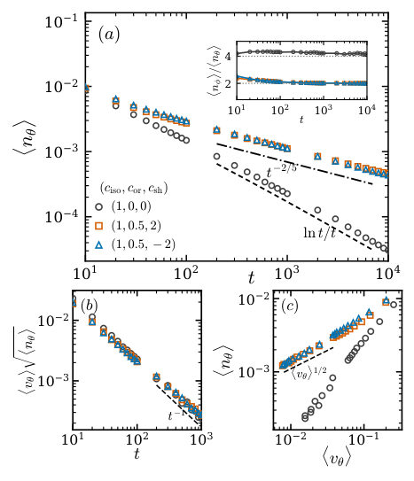

Summary. This theoretical work analyzes how the symmetry of magnetoelastic coupling governs the topological structure of defects in coupled magnetic and elastic materials. The authors show that quadrupolar coupling enforces specific charge-locking rules, which in turn lead to ultraslow, power-law coarsening kinetics. This establishes symmetry control as a mechanism to tune defect topology and ordering dynamics.
Why it may be interesting. The concept of symmetry controlling topological defects and slowing down relaxation dynamics is highly relevant to understanding glassy dynamics, domain coarsening in magnetic materials, and defect physics in condensed matter systems.
Main problem. The paper investigates how the symmetry of magnetoelastic coupling dictates the topological organization of defects and alters the kinetics of phase ordering in coupled magnetic and elastic media.
Main result. Quadrupolar coupling leads to charge-selective topological locking between magnetic and elastic defects, resulting in anomalously slow coarsening dynamics characterized by a power-law decay $t^{-2/5}$ and a dynamic exponent $z \simeq 5$.
Method. The analysis involves deriving an effective magnetic free energy by adiabatically eliminating the elastic field and studying the resulting defect dynamics using continuum field theories.
Model / system. The system is a 2D magnetoelastic medium modeled by a free energy functional coupling an in-plane magnetic order parameter $N(\mathbf{r}, t)$ to an elastic strain field $u(\mathbf{r}, t)$. The coupling includes isotropic and quadrupolar terms.
Key observables. Defect density decay ($\sim t^{-2/5}$), average defect velocity ($\sim t^{-4/5}$), and the topological relationship between elastic ($q_\phi$) and magnetic ($q_ heta$) defect charges.
Important parameters / regimes. Coupling coefficients ($c_{ ext{or}}, c_{ ext{sh}}$), which determine the locking regime (e.g., $q_\phi = q_ heta$ vs. $q_\phi = -q_ heta$).
Assumptions / limitations. The dynamics are assumed to be purely relaxational, and the analysis often involves adiabatic elimination of the elastic field.
Figures summary. Figures illustrate defect binding patterns under isotropic vs. quadrupolar coupling, and show the spatial response of coupled fields, highlighting the extended elastic contribution from quadrupolar coupling.
Paper structure. The paper progresses by first establishing the general magnetoelastic free energy, then analyzing the specific topological locking rules dictated by the symmetry of the coupling (isotropic vs. quadrupolar), and finally deriving the effective magnetic Hamiltonian and the resulting slow coarsening kinetics.
We demonstrate that the symmetry of magnetoelastic coupling governs the topological organization of composite defects and can qualitatively alter phase-ordering kinetics. In a two-dimensional theory of an in-plane magnetic vector coupled to elastic strain, we find that integer magnetic vortices bind pairs of elementary elastic half-defects. Isotropic magnetostriction produces a core-induced elastic winding independent of the magnetic charge, giving defect binding without charge locking and leaving the magnetic sector with essentially XY-like coarsening. In contrast, quadrupolar magnetoelastic coupling locks magnetic and elastic defect charges: continuous rotational symmetry favors $q_φ=q_θ$, whereas crystalline anisotropy can reverse the locking to $q_φ=-q_θ$. We reveal that both locking sectors display anomalously slow vortex annihilation: defect density shows a power-law decay $t^{-2/5}$, while the average defect-velocity scales as $t^{-4/5}$. These results are consistent with a dynamic exponent $z\simeq 5$. We show that this coarsening slowdown is associated with large anisotropic elastic friction. An adiabatic elimination of the elastic field reveals that isotropic magnetostriction merely renormalizes local magnetic interactions, whereas orientational coupling induces effective nonlocal interactions between magnetic spins. Our experimentally testable results thus establish magnetoelastic coupling symmetry as a means of controlling defect topology and ordering kinetics.
Authors: Finn Müßigbrodt, Andraž Omahen, Q. Rumman Rahman, Giulio Corazza, Yiwen Chu, Matteo Fadel
Type: both · Category: other · PDF: https://arxiv.org/pdf/2610.18776v1
Analysis basis: full PDF text, analyzed in chunks
Topic relevance: quantum measurements 3/5 · QC/QI experiment 2/5 · analog quantum simulation 2/5 · methods for driven-dissipative 2/5 · Keldysh / 2PI / non-Gaussian methods 1/5 · quantum optics experiment 1/5
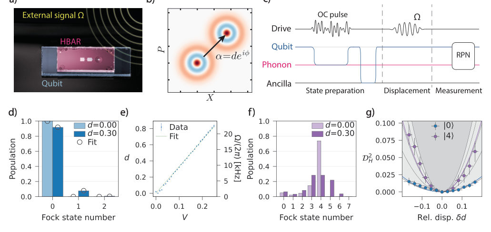

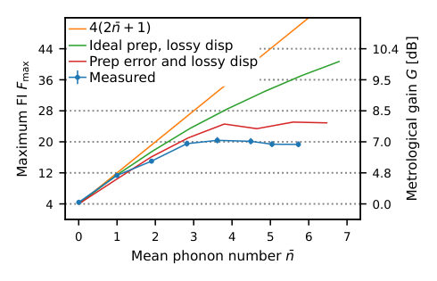

Summary. This research demonstrates quantum-enhanced sensing using a microgram-scale acoustic resonator coupled to a transmon qubit. By preparing the mechanical mode in non-Gaussian Fock states, the authors achieved a 7.0 dB improvement in signal sensitivity over classical limits. The use of machine learning for estimation further validates this quantum advantage in a robust, model-free manner.
Why it may be interesting. This work directly bridges quantum information theory (quantum metrology, non-Gaussian states) with macroscopic quantum systems (mechanical oscillators), providing a concrete, high-impact platform for testing fundamental quantum limits in condensed matter/AMO physics.
Main problem. The paper addresses achieving quantum-enhanced mechanical sensing beyond the Standard Quantum Limit (SQL) for unknown phase signals using macroscopic mechanical oscillators.
Main result. They demonstrated a 7.0 dB sensitivity gain in signal-amplitude estimation using a microgram-scale acoustic resonator prepared in non-Gaussian Fock states, validated by both analytical and model-free neural network estimation.
Method. The methodology combines optimal control for non-Gaussian state preparation, weak resonant signal interaction, and advanced Bayesian estimation techniques, including training a neural network for model-free parameter estimation.
Model / system. The system is a microgram-scale acoustic mode of a high-overtone bulk acoustic wave resonator (HBAR) coupled to a transmon qubit (cQAD device). The sensing protocol involves preparing the mechanical mode in Fock states $|k angle$ and measuring its response to a weak resonant signal.
Key observables. Fisher information (achieving five times the vacuum value), signal-amplitude sensitivity gain (7.0 dB), and the phonon-number distribution.
Important parameters / regimes. Fock state number ($k \le 7$), signal amplitude ($d$), phonon loss rate ($\Gamma$), and the measurement time ($t$).
Assumptions / limitations. The initial estimation relies on a parametrized model, which is improved by using a model-free neural network estimator to mitigate systematic bias from model mismatch.
Figures summary. Figures illustrate the cQAD setup and sensing protocol, showing measured phonon-number populations for vacuum and $|4 angle$ probes, and quantifying the quantum advantage via the squared Hellinger distance.
Paper structure. The paper moves from establishing the physical platform and Hamiltonian to detailing the sensing protocol (state preparation, weak signal interaction, readout). It then presents the quantitative results, comparing the achieved sensitivity gain against classical limits and demonstrating the robustness of the estimation using machine learning.
Massive mechanical oscillators couple directly to forces, accelerations and gravity, making them attractive probes of new physics and of quantum mechanics at macroscopic scales. Pushing sensitivities beyond the standard quantum limit for signals of unknown phase requires non-Gaussian quantum states, whose metrological advantage has so far been confined to lighter systems such as trapped ions. Here we operate a microgram-scale acoustic mode of a high-overtone bulk acoustic wave resonator as a phase-insensitive quantum-enhanced sensor. A transmon qubit prepares the mode in Fock states of up to seven phonons by optimal control, and resolves its phonon-number distribution after interaction with a weak resonant signal. Bayesian analysis yields a Fisher information five times the vacuum value, a 7.0 dB gain in signal-amplitude sensitivity over any classical probe state, irrespective of its energy, currently limited by state preparation infidelities. We then train a neural network on the measured sensor response to perform Bayesian estimation without any analytical model of the system, showing the same sensitivity gain with half the systematic bias. Our results establish acoustic resonators prepared in non-Gaussian states as quantum-enhanced probes for high-frequency gravitational waves, dark matter and wave-function collapse.
Authors: Jerzy Paczos, Piotr T. Grochowski, Natalia Bruno, Emanuele Distante, Stephan Welte, Magdalena Zych
Type: theory · Category: other · PDF: https://arxiv.org/pdf/2610.18131v1
Analysis basis: full PDF text, analyzed in chunks
Topic relevance: interference shaping light 3/5 · quantum optics experiment 3/5 · Tavis-Cummings & cavity-many-emitter 2/5 · analog quantum simulation 2/5 · quantum measurements 1/5

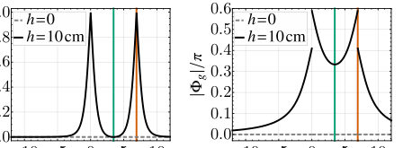


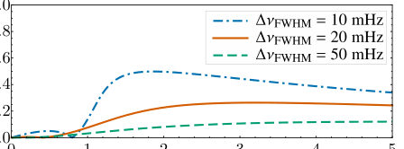
Summary. This paper proposes a novel tabletop method to test gravitational redshift by using photonic interferometers coupled to atomic scatterers. Instead of requiring kilometer-long paths, the technique leverages the sharp spectral features of atomic resonances to convert minute frequency shifts into large, measurable changes in interference visibility and phase. This opens a practical route for quantum optics experiments bridging quantum mechanics and general relativity.
Why it may be interesting. This work is highly relevant to AMO physics and quantum optics as it pushes the boundaries of precision measurement by integrating fundamental physics (GR) with advanced quantum light-matter interaction techniques (Cavity QED).
Main problem. The paper addresses the challenge of testing the intersection of quantum mechanics and general relativity by detecting minute gravitational redshift effects on quantum interference.
Main result. By coupling photonic interferometers to atomic scatterers, the authors propose replacing kilometer-scale geometric path accumulation with spectral enhancement, enabling tabletop measurements of gravitational redshift effects.
Method. The method involves modeling the interaction of photons with ultranarrow atomic resonances within cavity-QED or waveguide-QED setups to convert small frequency shifts into large, measurable changes in reflection amplitude and phase.
Model / system. The physical system is a photonic interferometer (Michelson or Mach-Zehnder) where the arms are enhanced by coupling to single-sided atom-cavity scatterers. The analysis uses input-output theory to derive reflection and transmission amplitudes based on the cooperativity parameter $C$.
Key observables. Interference visibility loss ($1-V$), gravity-induced phase shift ($\Phi_g$), reflection amplitude $r(\Delta)$, and transmission probability $T(\Delta)$.
Important parameters / regimes. Cooperativity ($C$), atomic transition linewidth ($\gamma$), cavity decay rate ($\kappa$), and the gravitational redshift $\delta\omega_g$.
Assumptions / limitations. The analysis often assumes lossless cavities and utilizes approximations for finite-bandwidth Gaussian probes, though it compares cavity-QED and waveguide-QED models.
Figures summary. Figures illustrate the interferometer setups (Michelson/M-Z) and plot the frequency-dependent transmission probability $T(\Delta)$ and acquired phase $\phi_t(\Delta)$ for varying cooperativity $C$, showing the characteristic spectral dips.
Paper structure. The paper builds from the general problem of gravitational redshift in interferometry, proposes the spectral enhancement mechanism using atomic resonances, derives the necessary theoretical expressions for cavity-QED and waveguide-QED systems, and concludes by quantifying the measurable signal for tabletop experiments.
Quantum mechanics and general relativity are remarkably successful, yet their joint predictions remain beyond direct experimental reach. Photonic interferometers operating in a gravitational field offer a promising route to test this regime: gravitational redshift differentiates photon propagation between vertically separated arms, leading to a predicted phase shift and reduction in interference visibility. These effects are minute on laboratory scales, motivating existing proposals to consider large interferometer areas to accumulate them geometrically. Indeed, such schemes typically require kilometre-scale optical paths to produce appreciable interferometric signals. Here, we propose a strategy that replaces geometric accumulation with spectral enhancement by coupling the two interferometer arms to optical scatterers based on ultranarrow atomic transitions. These transitions serve as local spectral references: gravitational redshift changes the photon's detuning from each resonance, producing large differences in reflection amplitude and hence substantial visibility loss and interferometric phase shift already for centimetre-scale height differences. We quantify the experimental requirements and assess the feasibility of implementation with current or near-term technology. Our proposal thus opens a route to tabletop optical tests of the interplay between quantum mechanics and general relativity.
Authors: Satoshi Uruno, Naoko Nakagawa
Type: both · Category: statistical mechanics · PDF: https://arxiv.org/pdf/2610.18250v1
Analysis basis: full PDF text, analyzed in chunks
Topic relevance: non-equilibrium universality 3/5 · analog quantum simulation 2/5 · driven-dissipative phase transition 2/5 · Frenkel-Kontorova 1/5 · Keldysh / 2PI / non-Gaussian methods 1/5 · methods for driven-dissipative 1/5
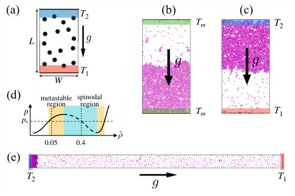

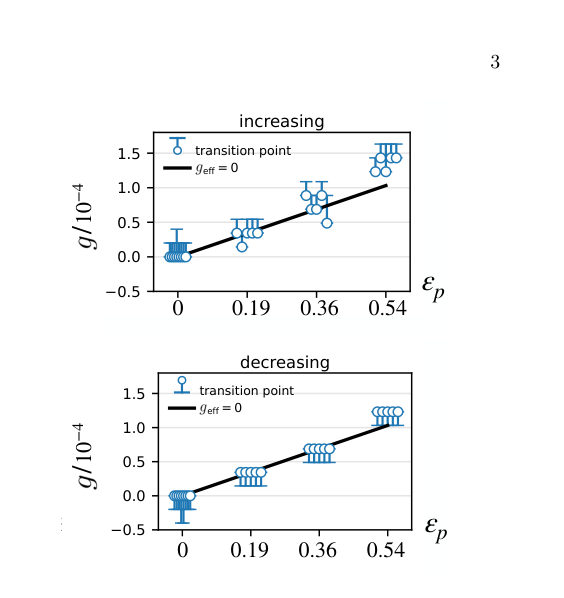


Summary. This work uses molecular dynamics simulations on a 2D fluid to investigate how heat conduction affects the liquid-gas phase transition. The results successfully validate the predictions of global thermodynamics, showing that the transition point shifts predictably away from zero effective gravity. This establishes a thermodynamic framework for predicting non-equilibrium structure formation.
Why it may be interesting. While the system is classical, the methodology of using global thermodynamics to predict non-equilibrium phase behavior is highly relevant to understanding phase transitions in complex quantum many-body systems where external gradients are present.
Main problem. The study tests the predictive power of global thermodynamics in describing non-equilibrium structure formation, specifically how heat conduction shifts the phase transition point in a fluid.
Main result. Molecular dynamics simulations confirm that the configurational transition shifts from zero effective gravity ($g_{ ext{eff}}=0$) to a finite, positive value under weak heat conduction, matching global thermodynamic predictions.
Method. The authors use classical molecular dynamics simulations to model a 2D Lennard-Jones fluid under varying gravitational fields and temperature gradients.
Model / system. The system is a 2D Lennard-Jones fluid confined between two boundaries held at different temperatures ($T_1$ and $T_2$) to induce heat conduction. The dynamics are governed by particle-particle and wall-particle interactions, incorporating external forces like gravity.
Key observables. Configurational order parameter ($\langle X angle/L$), transition points, and hysteresis response.
Important parameters / regimes. Weak heat conduction ($\Delta T > 0$), effective gravity ($g_{ ext{eff}}$), and the saturation-pressure difference ($\Delta p_s$).
Assumptions / limitations. The analysis is restricted to weak heat conduction regimes, and the theory relies on linear approximations for free energy differences.
Figures summary. Figures show the configurational order parameter ($\langle X angle/L$) versus gravity ($g$ and $g_{ ext{eff}}$) for both equilibrium ($\Delta T=0$) and heat-conducting ($\Delta T>0$) states, demonstrating the shift in the transition point.
Paper structure. The paper establishes the theoretical framework using global thermodynamics, applies this to a 2D Lennard-Jones fluid via MD simulations, and compares the observed shift in the liquid-gas transition under heat conduction against the theoretical prediction based on saturation pressures.
We test the effective-gravity prediction of global thermodynamics using standard molecular dynamics of a two-dimensional Lennard-Jones fluid. Under weak heat conduction with the lower boundary hotter than the upper boundary, the transition between liquid below gas and liquid above gas shifts from zero to finite downward gravity. Using independently measured equilibrium saturation pressures, we calculate the shift predicted by global thermodynamics and find agreement with the observed transition shift. The transition occurs at zero effective gravity, where the hydrostatic pressure difference balances the saturation-pressure difference between the two boundaries. The hysteresis response under heat conduction also agrees with the equilibrium response when plotted against effective gravity. These results establish the predictive power of global thermodynamics for nonequilibrium structure formation.
Authors: Saheli Mukherjee, Bivas Mallick, Samyadeb Bhattacharya, Ananda G. Maity, A. S. Majumdar
Type: theory · Category: other · PDF: https://arxiv.org/pdf/2610.17322v1
Analysis basis: full PDF text, analyzed in chunks
Topic relevance: interference shaping light 3/5 · quantum measurements 2/5 · analog quantum simulation 1/5 · correlated / nonlocal dissipation 1/5 · driven-dissipative phase transition 1/5 · methods for driven-dissipative 1/5 · quantum optics experiment 1/5
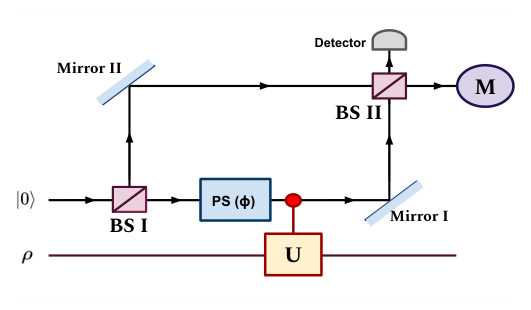


Summary. This paper introduces optical interferometry as a powerful, experimentally accessible tool to detect non-Markovian memory effects in open quantum systems. By monitoring changes in the interference pattern's phase shift and visibility, researchers can distinguish between memoryless (Markovian) and memory-retaining (non-Markovian) dynamics. This offers a simple framework for quantum sensing and noisy quantum devices.
Why it may be interesting. This work provides a highly operational and experimentally feasible diagnostic tool for memory effects, bridging abstract quantum information theory with concrete quantum optics measurements.
Main problem. The paper addresses the challenge of experimentally detecting and characterizing non-Markovian memory effects in open quantum systems.
Main result. It establishes that both the phase shift and the visibility of an optical interference pattern serve as simple, experimentally accessible, and sufficient signatures to witness non-Markovian dynamics.
Method. The authors utilize quantum interferometry, specifically analyzing the measurable phase shift and interference visibility, to diagnose the memory properties of the system's evolution.
Model / system. The analysis is framed for open quantum systems, often modeled using qubit dynamics, and is experimentally illustrated using a Mach-Zehnder interferometer setup.
Key observables. Phase shift ($\arg[ ext{Tr}(U ho)]$) and interference visibility ($| ext{Tr}(U ho)|$).
Important parameters / regimes. The dynamics are characterized by the presence or absence of memory effects, distinguishing between Markovian (memoryless) and non-Markovian regimes.
Assumptions / limitations. The method relies on the direct link between quantum coherence and interference visibility, and the analysis uses the small time approximation for certain theoretical mappings.
Figures summary. Figure 1 schematically shows the interferometer setup. Figure 3 illustrates the visibility-based measure of non-Markovianity for depolarizing dynamics.
Paper structure. The paper progresses from defining the problem of non-Markovianity to introducing interferometric methods. It details the use of phase shifts for witness-based detection and then focuses on visibility as a robust, monotonically non-increasing signature under Markovian evolution.
Recent efforts to detect non-Markovian memory have become increasingly important, motivated by the broad relevance of memory effects in quantum information processing, metrology, and thermodynamic engines. Here, we show that interferometric methods, particularly the phase shift and visibility, provide an experimentally accessible framework for probing environmental effects and witnessing non-Markovian dynamics. Specifically, suitably constructed witness operators enable the detection of non-Markovianity through measurable phase shifts in the interference pattern. Furthermore, we prove that the interferometric visibility is monotonically non-increasing under incoherent CP-divisible (Markovian) dynamics. Consequently, any revival of the optimized visibility constitutes a sufficient signature of information backflow and hence non-Markovianity. The effectiveness of the proposed phase-based and visibility approaches is illustrated for representative examples of non-Markovian dynamics. Our results offer a simple and experimentally feasible framework for probing memory effects, with potential applications in quantum sensing and noisy intermediate-scale quantum devices.
Authors: Bowen Sun, D. L. Zhou
Type: theory · Category: quantum information and computing · PDF: https://arxiv.org/pdf/2610.18236v1
Analysis basis: full PDF text, analyzed in chunks
Topic relevance: correlated / nonlocal dissipation 3/5 · Keldysh / 2PI / non-Gaussian methods 1/5 · analog quantum simulation 1/5 · driven-dissipative phase transition 1/5 · methods for driven-dissipative 1/5 · non-equilibrium universality 1/5 · quantum measurements 1/5


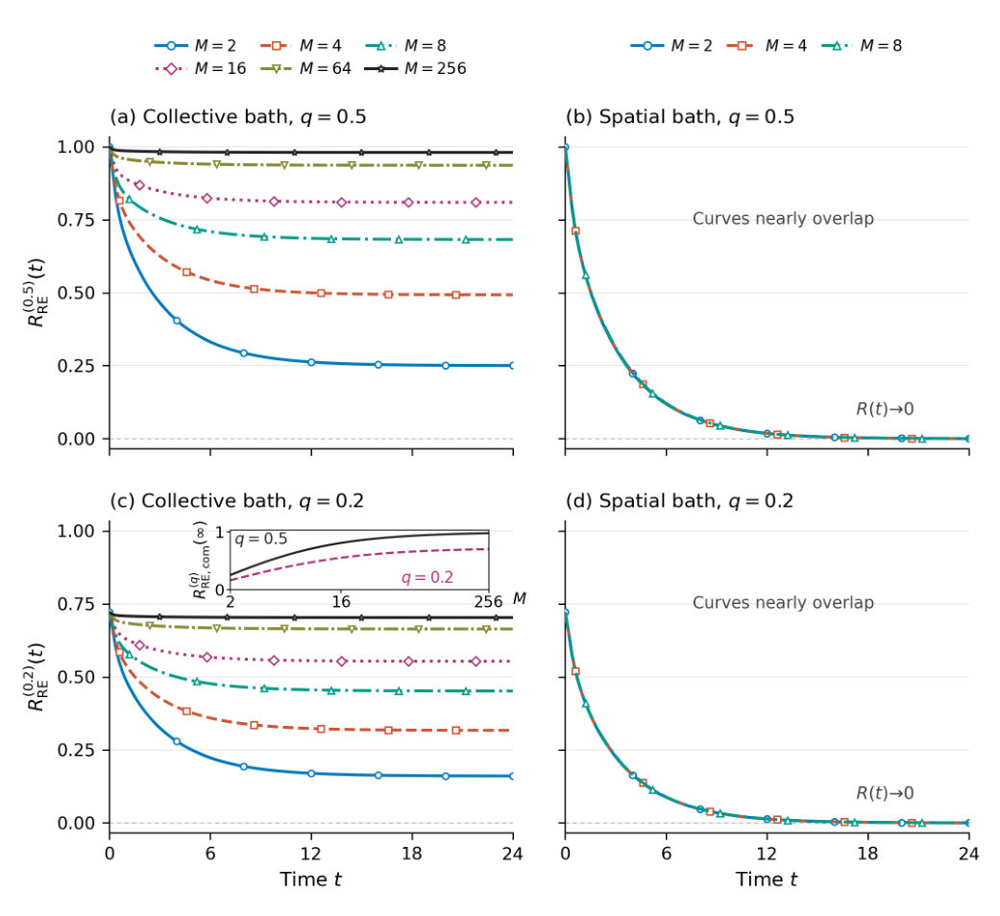
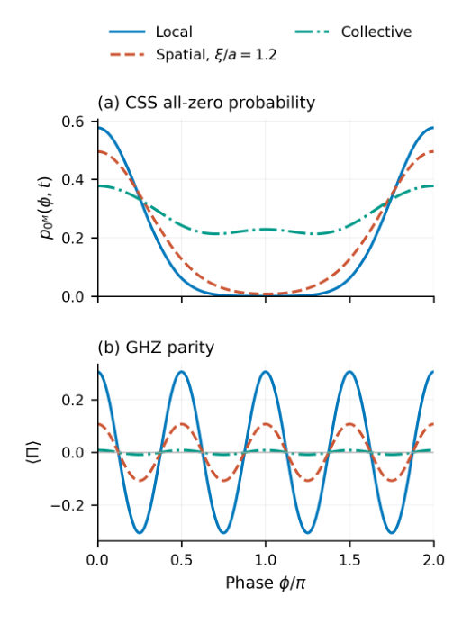
Summary. This work introduces a resource-based reliability framework to assess quantum devices whose failure is characterized by resource depletion rather than entering a fixed failure subspace. By linking operational tasks (like QRNG generation or interferometry) to specific coherence measures, the authors quantify the remaining useful resource capacity. This provides a powerful, task-specific tool for assessing quantum hardware robustness against environmental noise.
Why it may be interesting. It provides a rigorous, task-dependent way to quantify device longevity in open quantum systems, moving beyond simple failure probability to resource depletion.
Main problem. The paper develops a resource-based reliability framework for quantum-coherent devices that degrade by losing necessary resources without entering a fixed failure subspace.
Main result. The framework quantifies reliability using a task-specific resource monotone, providing a measure distinct from classical survival probability.
Method. It extends classical reliability concepts (like the hazard rate) to quantum resources, applying the framework to QRNGs and interferometers.
Model / system. The analysis uses the spin-boson model to study environmental decoherence in multi-spin systems, comparing collective versus spatially resolving noise effects.
Key observables. Relative-entropy coherence, logarithmic l1 coherence, resource reliability $R_Q(t)$, and the resource hazard rate $h_Q(t)$.
Important parameters / regimes. The resource measure depends critically on the chosen task, allowed operations, and the specific coherence monotone used.
Assumptions / limitations. The framework requires fixing the task, allowed operations, and the resource monotone; the analysis often assumes pure-dephasing dynamics.
Figures summary. Figures illustrate finite-record resource-reliability assessment, comparing inference under collective noise versus true/partially correlated resources, and showing mean absolute estimation error versus model-mismatch bias.
Paper structure. The paper introduces the resource-based reliability concept, applies it to QRNGs and interferometers using coherence measures, and uses the solvable spin-boson model to analyze how different noise structures affect these resource metrics.
Quantum devices can lose the resource needed for a specified function without entering a fixed failure subspace. We propose a resource-based reliability framework for this situation, quantifying the remaining task-relevant resource relative to a stated ideal capacity. The resource measure is selected through its operational connection to the task and the allowed operations. We develop this approach for a trusted quantum random-number generator and a calibrated two-port interferometer. Relative-entropy coherence determines the optimal asymptotic yield of standard coherent qubits under incoherent operations for the former, while logarithmic $l_1$ coherence quantifies the fringe resource of the latter and determines its calibrated correct-port probability. An exactly solvable multi-spin spin-boson model illustrates how environmental records affect these resources at the same isolated-spin dephasing strength. Collective noise preserves coherence within magnetization sectors for product inputs, but enhances the decay of Greenberger-Horne-Zeilinger branch coherence. Finite-record simulations connect the resource definitions to measurement counts and show that increasing the sample size reduces statistical fluctuations without eliminating bias from an incorrect many-spin noise model. The resulting framework provides a task-specific route to reliability assessment when a fixed failure projector is insufficient, while keeping retained resource capacity distinct from a classical survival probability.
Authors: Li-Wen Zhang, Yang Liu, Han-Jie Zhu, Wei Qin
Type: theory · Category: other · PDF: https://arxiv.org/pdf/2610.17682v1
Analysis basis: full PDF text, analyzed in chunks
Topic relevance: quantum measurements 3/5 · QC/QI experiment 2/5 · analog quantum simulation 2/5 · quantum optics experiment 1/5


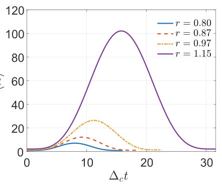
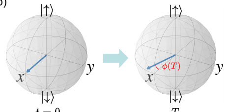
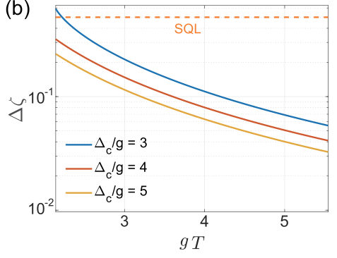
Summary. This paper proposes a novel quantum sensing protocol for trapped-ion spin-oscillator systems to measure weak fields with enhanced precision. By simultaneously utilizing detuned motional squeezing and spin-oscillator entanglement, the protocol achieves an exponential improvement in sensitivity over standard methods. The analysis confirms that this quantum advantage persists even in the presence of realistic technical noise.
Why it may be interesting. This work is highly relevant as it directly tackles quantum metrology using trapped ions, a canonical platform in AMO physics. The combination of squeezing and entanglement to achieve super-SQL scaling is a key theoretical advance.
Main problem. The primary goal is to achieve measurement precision for weak-field sensing that surpasses the Standard Quantum Limit (SQL).
Main result. The proposed protocol achieves an exponential improvement in sensitivity over unsqueezed cases by combining detuned motional squeezing and spin-oscillator entanglement.
Method. The authors develop a streamlined, single-step protocol that maps the weak field signal onto the spin phase shift, quantifying sensitivity using the Quantum Fisher Information (QFI).
Model / system. The system modeled is a trapped-ion spin-oscillator system. The dynamics are governed by a Hamiltonian involving detuned parametric amplification (DPA) coupling the spin ($\hat{\sigma}_z$) to the motional mode ($\hat{a}$).
Key observables. Quantum Fisher Information (QFI), Quantum Cramér-Rao Bound (QCRB), accumulated phase $\phi(T)$, and the final expectation value $\langle\hat{\sigma}_y angle_f$.
Important parameters / regimes. Detuning ($\Delta_c$), squeezing degree ($r$), interrogation time ($T$), and noise parameters ($\sigma, \Gamma, \kappa$).
Assumptions / limitations. The analysis considers the system's evolution under the influence of various noise sources, including frequency fluctuations, spin decoherence, and motional damping.
Figures summary. Figure 2 illustrates Wigner functions and schematic spin states for the motional mode loop. Figure 3 shows the time evolution of the mean phonon number.
Paper structure. The paper introduces the problem of surpassing the SQL, details the Hamiltonian and the combined squeezing/entanglement protocol, derives the sensitivity using QFI, and analyzes the performance in both ideal and noisy environments.
Achieving measurement precision beyond the standard quantum limit (SQL) is a fundamental object in quantum metrology. In this manuscript, we propose a streamlined protocol for weak signal sensing in a trapped-ion spin-oscillator system that simultaneously exploits detuned motional squeezing and spin-oscillator entanglement. By combining these two quantum resources, the phase accumulation in this spin system is significantly accelerated, as a result achieving an exponential improvement in the sensitivity over unsqueezed cases. Remarkably, we show that the significant metrological gain provided by our protocol persists in noisy environments, with the sensitivity remaining below the SQL. In particular, our protocol retains a distinct advantage in the short interrogation time regime, thus demonstrating the practical potential in quantum-enhanced sensing.
← Index · ← Previous · Next →